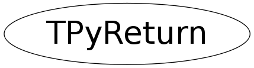

class TPyReturn
Python expression eval result
Transport class for bringing objects from python (dynamically typed) to CINT
(statically typed). It is best to immediately cast a TPyReturn to the real
type, either implicitly (for builtin types) or explicitly (through a void*
cast for pointers to ROOT objects).
Examples:
root [0] TBrowser* b = (void*)TPython::Eval( "ROOT.TBrowser()" );
root [1] int i = TPython::Eval( "1+1" );
root [2] i
(int)2
root [3] double d = TPython::Eval( "1+3.1415" );
root [4] d
(double)4.14150000000000063e+00
Function Members (Methods)
public:
| TPyReturn() | |
| TPyReturn(PyObject* pyobject) | |
| TPyReturn(const TPyReturn&) | |
| virtual | ~TPyReturn() |
| static TClass* | Class() |
| virtual TClass* | IsA() const |
| PyObject* | operator _object*() const |
| Char_t | operator Char_t() const |
| const char* | operator const char*() const |
| Double_t | operator Double_t() const |
| Float_t | operator Float_t() const |
| Int_t | operator Int_t() const |
| Long_t | operator Long_t() const |
| Short_t | operator Short_t() const |
| UInt_t | operator UInt_t() const |
| ULong_t | operator ULong_t() const |
| UShort_t | operator UShort_t() const |
| void* | operator void*() const |
| TPyReturn& | operator=(const TPyReturn&) |
| virtual void | ShowMembers(TMemberInspector& insp) |
| virtual void | Streamer(TBuffer& b) |
| void | StreamerNVirtual(TBuffer& b) |
Data Members
private:
| PyObject* | fPyObject | ! actual python object |
Class Charts
{kind=link}
{kind=link}
{kind=link}
{kind=link}

Function documentation
TPyReturn& operator=(const TPyReturn& )
Assignment operator. Applies python object reference counting.
operator void*() const